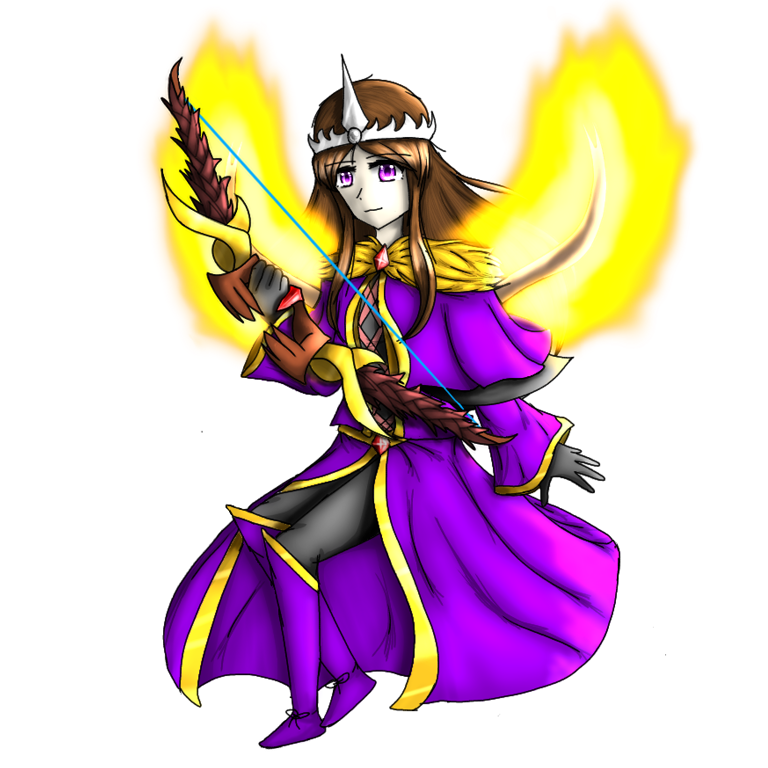

You may well succeed in defeating me... But you know it! This spirit will rise to cut the thread of constant history!
Caty Yafumo is one of the four Guardians of the Land from the Terraria Guardians AU and the ex-apprentice of Yukari Yakumo, she is known as the Guardian of Bow and Profanation. She is a majestic superhuman cappable of destroy and profane higher beings by herself.
Yafumo's debut was cronologically on Caty Phantasm as the Phantasm stage boss, then she appeared on Infinite Eclipse and Calamitous Danmaku as a playable character, on Great Guardians of the Land as the Ultra stage boss, and then on Journey of Multiple Apocalyptic Dimensions as both playable character and possible opponent.
Yafumo is kind, pure and righteous, that's why she is considered the purest of the creatures.
She has a giant sense of justice, Yafumo is very strict on rules, unless those rules oppress everyone else. She won't resist on punish with iron fist the ones who make others suffer, including deities and tyrants. However, Caty always tries to bring people by the good path and will always choose dialog as first, she only uses violence as ultimate resource because she dislikes to fight and kill.
It can be hard to Yafumo to hang on a talk, but she's a person everyone trust, this same characteristic led her to become friends with characters like Empress of Light, Draedon, Sumiyoshi and even Catyon and Yukari. Caty is sensible to high noise, strong odors, some textures and evades eye contact.
She is very intelligent for combat and analysis, and speaks in a cientifical, poetic way.
When Reimu arrived in Terraria after defeating Wendy, Caty enters to cordially welcome her with a friendly attitude, but after Reimu asked her to know what kind of place they are, Reimu thought she was a Youkai and Terraria was dangerous, the last straw was when she treated Caty as a girl and the fight started.
After Reimu was surprised by the power of the profaner, she made a deal with Reimu: Caty will help her to restore the Hakurei barrier, but the maiden could only touch that land if she allowed it.
She fought against Yukari to restore the barrier, and her motivation to learn danmaku made her ask Yukari to become her apprentice, Yukari was intrigued by the profaner's talent, so she accepted.
The stopped time also affected Terraria, Yukari told her that it was necesary to solve the incident of the fake moon so Yafumo dispossed herself to help.
While Reimu and Yukari made team, Yafumo went by her own way and found Sumiyoshi, with whom she quickly became friends and went together to resolve the incident.
Things changed when Caty started to feel a familiar pressence at the Eientei, she discovered that Empress of Light was trying to bring back the real moon and restore the time course by pressing Kaguya by force, Caty tried to reason with her.
While she tried to help Crono with a drawback with Providence, she noticed something was wrong on Providence and some creatures. They went to investigate, but Yharon warned them the Devourer of Gods is seizing his opportunity and looking for vengeance, what made Caty feel a bit sad.
After DoG's defeat, they got the awaited answers by Calamitas. The true reasons of the culprid and its method made Yafumo feel outraged.
She invited Reimu to a meeting, Reimu's desire of meet and beat the rest of the Guardians gave Caty the idea of organizing a grand friendly duel event.
Yafumo didn't wanted to make part, but after the insistence of the rest of the protagonists she preppared to the battle.
Yafumo has a "middle earth" aesthetic.
She has bright purple eyes, a long light chestnut hair, she wears a purple jacket, boots, long skirt and cloak, everything with golden borders. Her cloak has a golden fur around her neck and has a diamond-shaped ruby brooch like on her skirt, below her jacket has a grey cloth with a rose zig-zag pattern on her chest. She also has a silver crown with a horn similar to Empress of Light, and a white jewel and a pair of yellow fire wings similar to Providence, her wings change color by the day like this last one.
Yafumo is very small for her age, measuring 1.46m. For an example of how small she is, she is one head smaller than Sumiyoshi, who is 1 year younger than her.
Her name (Caty/キャティ) comes from the english word "catty" without te double t, which means "malicious" or "cunning" and is related to cat's behaviour.
But her surname (Yafumo/八ふも) is a joke on mixing the surname "Yakumo" (eight or infinite clouds) and the word "fumo", referring to the name of the plushies from the Touhou saga, this, in turn, is the inversion of kanjis of the onomatopoeia "mofu mofu" which means "fluffy" or "cute".
By so much time, her name was considered untranslatable and could only be interpreted as "little cat and yukari's fumo". But after analysing the kanjis the real meaning was "Malicious and Infinite Fluffiness", this makes reference to a double personality. From a part, Caty is cute, kind, sensible and believes everyone can be redeemed, while in other part, she is someone worth of being feared, someone who will not hesitate to punish whoever deserves it.
In general combat, she shoots multiple yellow fire arrows, purple or dark and bright projectiles. Her patterns are "flower" or circle-shaped and very ordered or "technical".
When Caty dies, she can resurrect on the same place at least 3 times, but these can be more if the battle lasts for a long time. When this happens, she is covered with a green aura for a momment and all her life and energy regenerates faster.
With only a battle, Yafumo can learn and mimic someone else's especial abilities and use it in combat, even if this ability is unique to a character from another dimension.
Some of the most recognized mastered abilities are Providence's Holy flames (The debuff, not arrows or projectiles), DoG's Cosmic Energy and Yukari's Gaps. However, Caty priorizes her own skills and patterns. The times she displays copied abilities are special spellcards or appearances in endings.
Caty can read a person's past, this is different from Mind Reading power, this works as "flashbackers", she can't know what someone is thinking in the moment, but she can know what they did before the encounter, this allows Yafumo to "set" her correct attitude with the enemy and anticipate manipulations or deceptions. Past reading power can also be manifested as just a feeling.
Another difference between Mind Reading and Past Reading is Mind Reading can't be used on objects or mindless people such as Hollow Knight's Vessels, Past Reading can.
Yafumo is the master and the only who wields this ability, though Crono also gets this on JoMAD, he can't control it and the feelings and flashbacks invade Crono's mental stability.

Kanji: キャティ 八ふも
Titles: Profaner Warrior; Tyrant of Tyrants
Species: Human
Age: 14 years
Abilities: Resurrect; Master Abilities; Past Reading
Apparitions: THCaty; IE; CD; GGotL; JoMAD
Themes: Rum, Woman, Victory; Necrofantasia; The Devil Made Us Do It
Character Type: OC (Dark Caty)
Dimension: Terraria